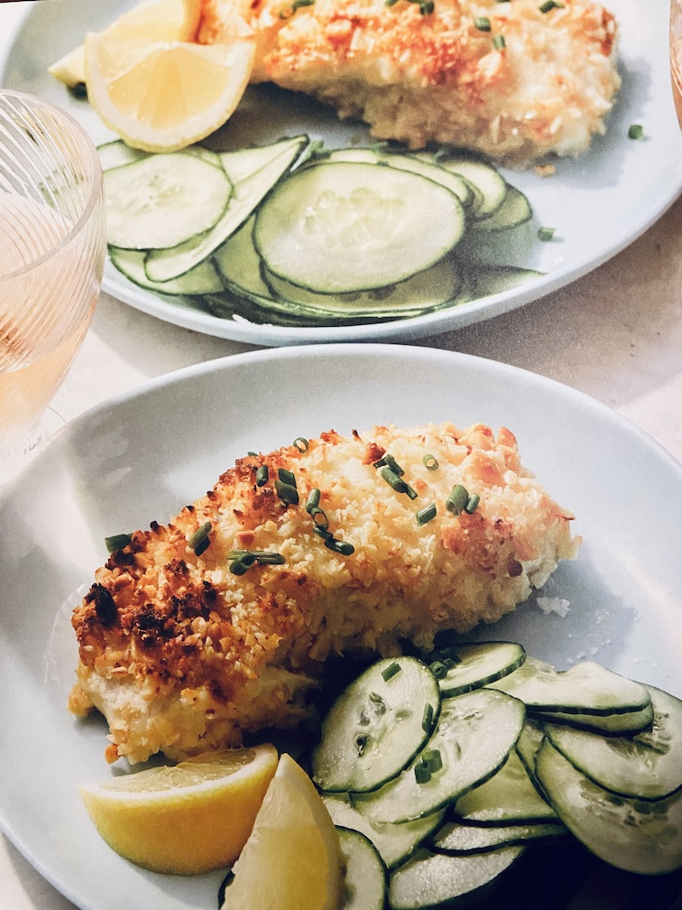

Paleo Hazelnut-Crusted Halibut

Description
The mild taste of halibut is the ideal blank slate for a lemony
hazelnut crust in this energizing dish from functional
medicine expert Chris Kressner. Refreshing cucumbers and chives
complete this restaurant-worthy meal perfect for dining al fresco.
Ingredients
- 1 tablespoon Thrive Market Organic Virgin Coconut Oil
- Sea salt and white pepper, to taste
- 2 8-ounce halibut fillets
- 1 cup Thrive Market Vegan Mayonnaise
- 1 1/2 cups hazelnuts, very finely chopped
- Juice of 1 lemon
- Fresh chives, chopped
- 1 large cucumber, very thinly sliced
Steps
- Preheat oven to 375°F. Grease an ovenproof
baking dish with coconut oil or ghee.
- Salt and pepper the halibut and coat with mayonnaise. Dredge the
fillets in the chopped hazelnuts and place in the baking dish.
- Bake for 15 minutes, or until the fish lakes easily with a fork.
Keep a close eye while baking, as the hazelnuts can burn easily. If
necessary, lower the temperature to 350°F.
- Plate the cookd fillets, squeeze lemon over them, and garnish with
chives. Arrange the sliced cucumber on the side.
Home